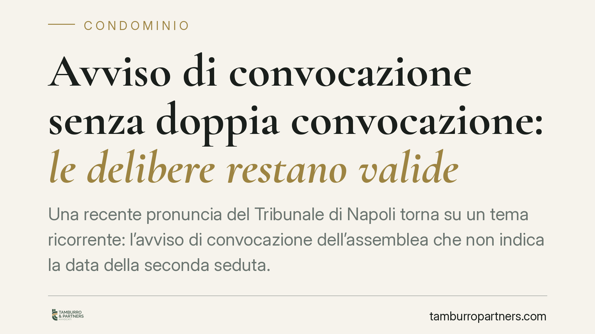

Avviso di convocazione senza doppia convocazione: le delibere restano valide
Una recente pronuncia del Tribunale di Napoli torna su un tema ricorrente: l'avviso di convocazione dell'assemblea che non indica la data della seconda seduta. Il vizio formale, da solo, non travolge le delibere. Ma c'è un prezzo: vanno rispettati i quorum più rigorosi della prima convocazione. Un dettaglio che l'amministratore deve conoscere prima di mettere ai voti.

Il caso
Accade spesso: l'amministratore convoca l'assemblea indicando una sola data, senza prevedere — come di prassi — una seconda convocazione in caso di mancato raggiungimento del numero legale. Da qui la domanda dei condòmini: le decisioni prese sono ancora valide?
Secondo una recente pronuncia del Tribunale di Napoli, la risposta è affermativa, ma condizionata. L'omessa indicazione della doppia convocazione nell'avviso non costituisce di per sé causa di invalidità delle delibere. L'assemblea resta validamente costituita a patto che si applichino i quorum, più severi, previsti per la prima convocazione.
*Nota sulla fonte: gli estremi completi della decisione (numero, data e sezione) sono in corso di verifica presso le banche dati; il principio qui esposto è coerente con l'orientamento consolidato in materia.*
Inquadramento normativo
Il punto di partenza è l'art. 66 disp. att. c.c., che disciplina la convocazione dell'assemblea. La seconda convocazione è una facoltà, non un obbligo: serve a consentire la validità della riunione con quorum attenuati quando la prima va deserta. La norma precisa inoltre che la seconda convocazione non può tenersi nello stesso giorno della prima. L'indicazione del comma esatto della disposizione va confrontata con il testo vigente, ma l'impianto è questo: facoltatività della seconda seduta e divieto di contestualità.
Sul versante dei quorum entra in gioco l'art. 1136 c.c. In prima convocazione, l'assemblea è regolarmente costituita con la presenza di tanti condòmini che rappresentino i due terzi del valore dell'edificio e la maggioranza dei partecipanti al condominio. Per la validità delle delibere ordinarie (co. 2) occorre il voto favorevole della maggioranza degli intervenuti che rappresenti almeno la metà del valore dell'edificio, ossia 500 millesimi.
Attenzione, però: l'art. 1136 c.c. prevede quorum differenziati a seconda dell'oggetto. I commi 4 e 5 richiedono maggioranze rafforzate per materie specifiche — ad esempio nomina e revoca dell'amministratore, liti, ricostruzioni, innovazioni. Generalizzare "il quorum della prima convocazione" è dunque un errore di prospettiva: va individuato il quorum corretto in base alla materia all'ordine del giorno.
Implicazioni pratiche
Il principio ha una logica precisa. Il vizio dell'avviso — l'assenza della seconda data — è un difetto formale. Ma non può tradursi in un vantaggio per chi delibera. Se l'avviso non prevede la seconda convocazione, l'assemblea non può "scaricare" sui quorum alleggeriti della seconda seduta. Deve raggiungere le maggioranze più alte della prima.
Di qui la vera area di rischio processuale: non tanto il modulo dell'avviso, quanto la verifica aritmetica delle presenze e dei voti. Una delibera assunta con quorum da seconda convocazione, su un avviso privo di seconda convocazione, è esposta a impugnazione.
Il termine per agire è dettato dall'art. 1137 c.c.: trenta giorni. Decorrono dalla data della delibera per i condòmini dissenzienti o astenuti presenti in assemblea, e dalla comunicazione del verbale per gli assenti. È un termine di decadenza: trascorso, la delibera annullabile si consolida.
Cosa fare in concreto
- Amministratore: redigi l'avviso indicando sia la prima sia la seconda convocazione, con date e orari distinti e nel rispetto del divieto di contestualità ex art. 66 disp. att. c.c. È la soluzione più sicura.
- Amministratore: se l'avviso contiene una sola data, verifica che i quorum raggiunti in assemblea siano quelli della prima convocazione, calibrati sulla specifica materia (ordinaria o a maggioranza rafforzata ex art. 1136, co. 4 e 5, c.c.).
- Condòmino: controlla il verbale e ricostruisci presenze e millesimi votanti. L'eventuale vizio sta nei numeri, non solo nella forma dell'avviso.
- Condòmino: se intendi contestare, rispetta il termine di trenta giorni ex art. 1137 c.c., individuando con precisione il momento di decorrenza (data della delibera o comunicazione del verbale).
- Entrambi: conservate gli avvisi, le ricevute di comunicazione e il verbale con il dettaglio millesimale. In giudizio è lì che si gioca la partita.
---
Contributo informativo a cura di Tamburro & Partners — Avv. Giuseppe Tamburro. Non costituisce parere legale.
Ogni condominio ha una storia a sé.
Se gestisci un'amministrazione e vuoi un confronto su una specifica questione condominiale, scrivi allo studio. Ti rispondiamo entro un giorno lavorativo.